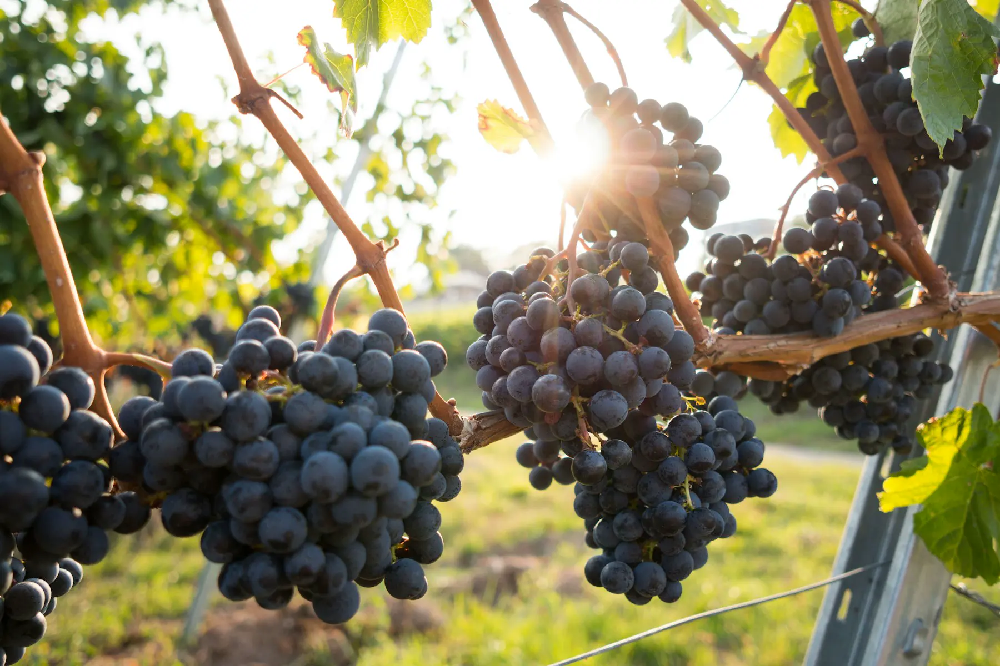
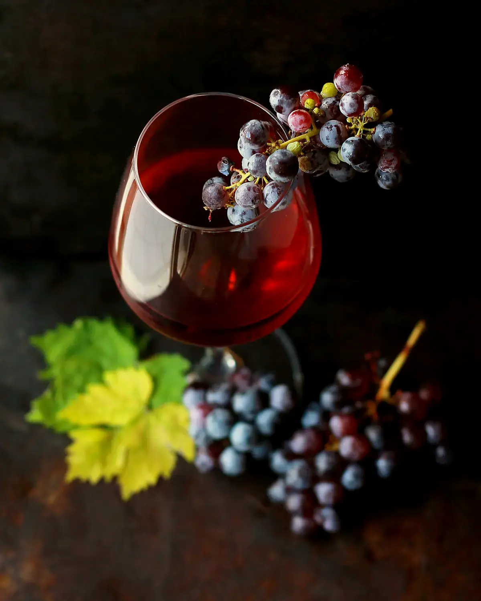
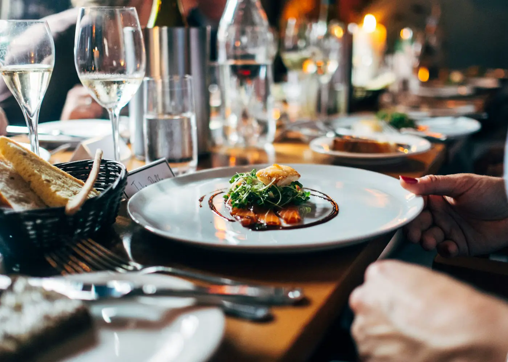

Vom Stock ins Glas.
Weingut
Elmen
Steile Lagen, ruhige Weine, ein Haus an der Mosel.

Riesling
Alte Reben
Die Reben stehen am Schiefer. Wir lesen von Hand und lassen dem Wein Zeit.
Lese
Am Hang
Morgens noch kühl, abends schon Gold. Die Lage entscheidet den Jahrgang.
Keller
Großes Holz
Kühler Keller, wenig Eingriff. Der Wein bleibt klar.
Wer den Hang gesehen hat, versteht den Wein.

Anreise
Zum Gut
Mosel, seit 1924. Die Probe ist nach Vereinbarung.